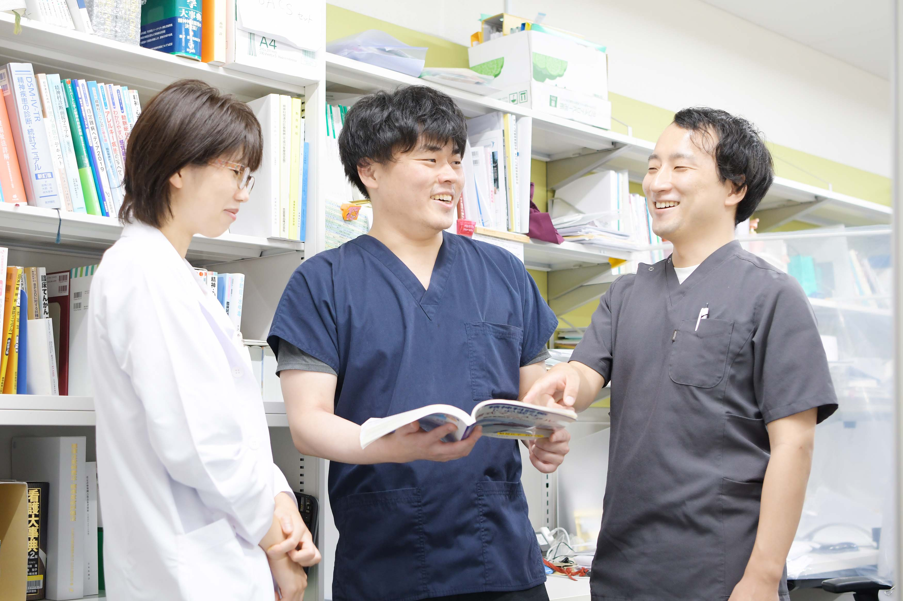
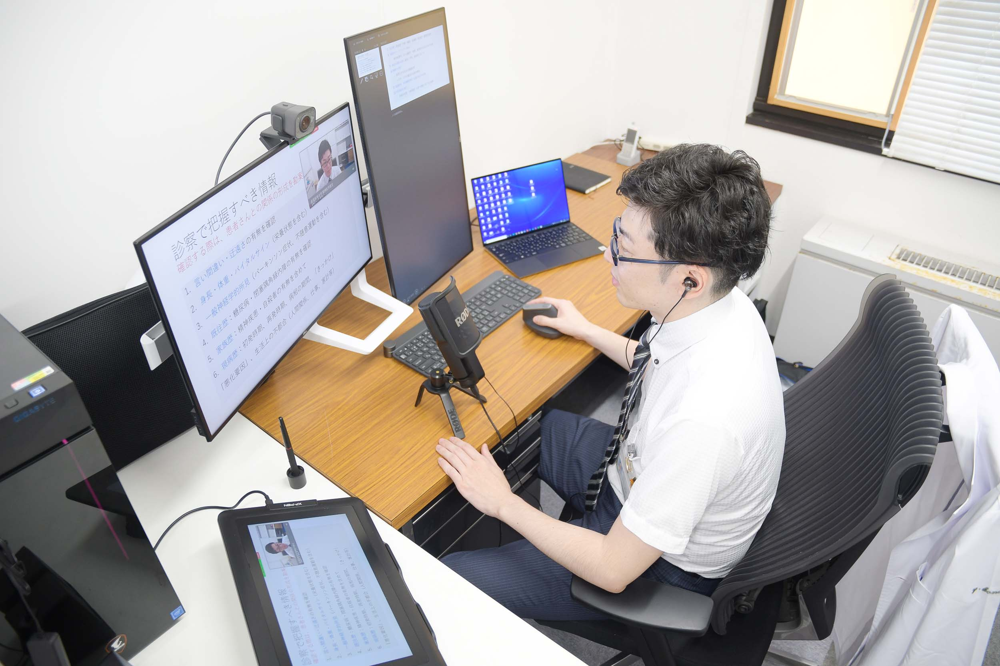

Message
入局を希望されるみなさんへ

Education
教室での教育体系の特徴

Online lesson
オンライン授業について
昨今の感染症の流行から、当科はいち早くオンラインでの授業や勉強会の環境作りに取り組んでおります。現在、大学の授業はもちろん、医局員同士の勉強会もオンラインでおこなっております。そうすることで感染症対策はもちろん、他施設に出向している医局員にも勉強会に参加をしてもらい、施設を超えた活発な意見交換に役立っております。オンラインのメリット、デメリットを考え、今後もオンラインの良さが生かせる場面では、オンラインでの授業や勉強会を継続していく予定としております。

Simulation
卒後シミュレーション
（精神科専門医取得コース例）
| 1年目 | 臨床研修医（各研修先病院） |
|---|---|
| 2年目 | 臨床研修医（各研修先病院） |
| 3年目 | 専修医（県外：専攻医①） |
| 4年目 | 専修医（県外：専攻医②） |
| 5年目 | 専修医（産医大：専攻医③） |
| 6年目 | 専修医（産医大） |
| 7年目 | 助教 |
|---|---|
| 8年目 | 助教 |
| 9年目 | 助教 |
| 10年目 | 産業医 |
| 11年目 | 産業医（義務年限終了） |
※シーリング（人数制限）のため県外提携先2年出向が必要
※大学病院：措置症例少リスク（卒業生の学外派遣はMAX2.5年）